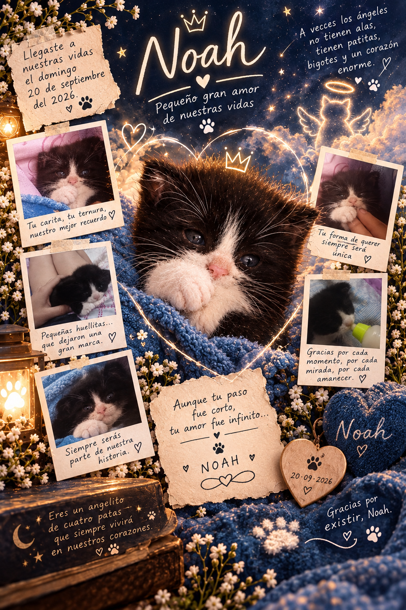

31 mañanas contigo
OCTUBRE
Donde cada huellita me lleva hasta ti.
Y DONDE NOAH CAMINA POR NUESTROS DÍAS CUIDÁNDONOS Y AUNQUE NO LO VEAMOS TAMBIÉN ESTÁ EN NUESTROS CORAZONES Y PENSAMIENTOS
🐾

Nuestro camino de octubre
Cada huellita guarda algo que escribí para ti.